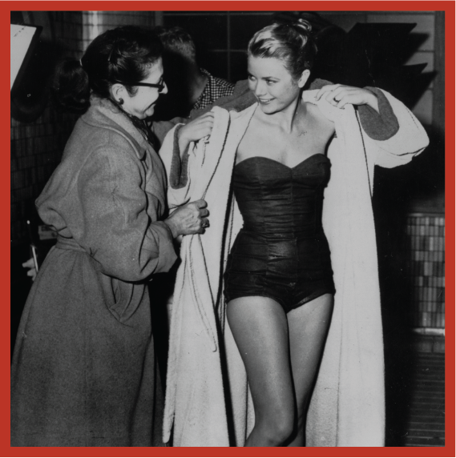
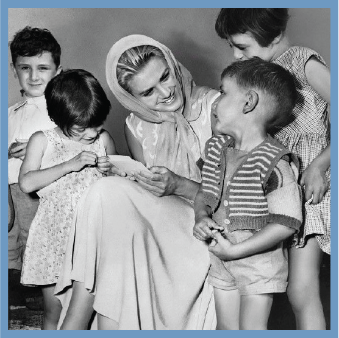

GRACE KELLY

fashion influence
Numerous exhibitions have been held of Kelly’s life and clothing. The Philadelphia Museum of Art presented her wedding dress in a 2006 exhibition to mark the 50th anniversary of her marriage, and a retrospective of her wardrobe was held at London’s Victoria and Albert Museum in 2010. The V&A exhibition continued in Australia at the Bendigo Art Gallery in 2012. This famous dress, seen around the world, took thirty five tailors six weeks to complete.
After her death, Kelly’s legacy as a fashion icon lived on. Modern designers, such as Tommy Hilfiger and Zac Posen, have cited her as a fashion inspiration. During her lifetime, she was known for introducing the “fresh faced” look, one that involved bright skin and natural beauty with little makeup. Her fashion legacy was even commemorated at the Victoria and Albert Museum of London, where an exhibit titled, “Grace Kelly: Style Icon” paid tribute to her impact on the world of fashion. The exhibit included 50 of her legendary ensembles. She is remembered for her “college-girl” everyday fashion, defined by her pulled-together yet simple look.

philanthropy
During her marriage, Kelly was unable to continue her acting career. Instead, she performed her daily duties as princess and became involved in philanthropic work.She founded AMADE Mondiale, a Monaco-based non-profit organization that was eventually recognized by the UN as a Non-governmental organization. According to UNESCO’s website, AMADE promotes and protects the “moral and physical integrity” and “spiritual well-being of children throughout the world, without distinction of race, nationality or religion and in a spirit of complete political independence.” Her daughter, Princess Caroline, carries the torch for AMADE today in her role as President. Kelly was also active in improving the arts institutions of Monaco, forming the Princess Grace Foundation in 1964 to support local artisans. In 1983, following her death, Princess Caroline assumed the duties of President of the Board of Trustees of the Foundation; Prince Albert is Vice-President.
Following Kelly’s death, the Princess Grace Foundation-USA (PGF-USA) was established to continue the work she had done anonymously during her lifetime, assisting emerging theater, dance and film artists in America. Incorporated in 1982, PGF-USA is headquartered in New York and is a tax-exempt, not-for-profit, publicly supported organization. The Princess Grace Awards, a program of the Princess Grace Foundation-USA, has awarded nearly 800 artists at more than 100 institutions in the U.S. with more than $15 million to date.